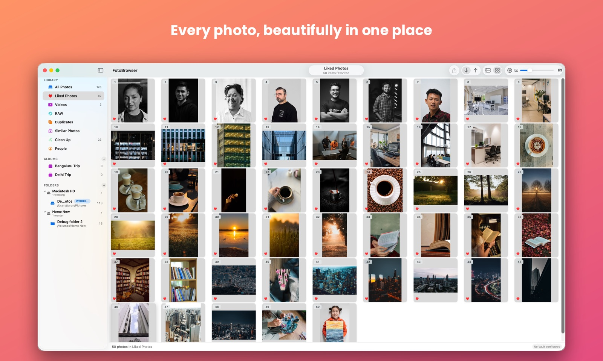
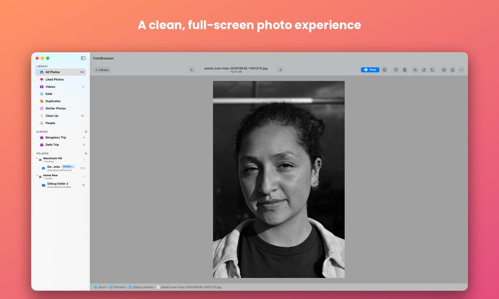
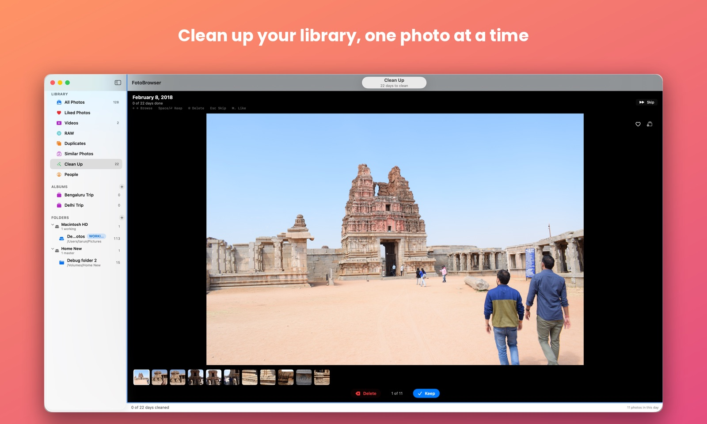
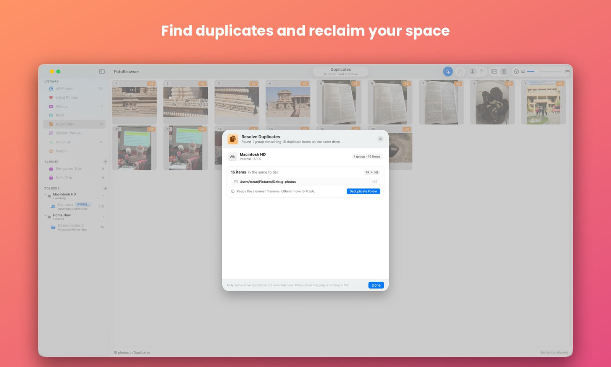
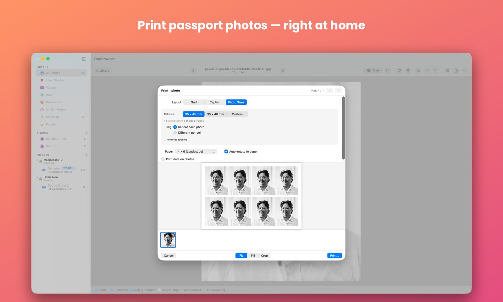

See it in action
Why FotoBrowser?
Apple Photos keeps everything inside a single .photoslibrary bundle. Move it the wrong way or point it at an external drive and it can break — and then your realistic option is to buy more expensive Apple storage to keep things "safe." Your photos are effectively held hostage by the app.
FotoBrowser does the opposite. Your photos stay as ordinary files in ordinary folders on whatever drives you like. You get an Apple-Photos-style timeline, built around how people actually back up — working disks, master drives, and read-only vaults.
What you get
🔎 Find a place as you type NEW
Set Location suggests places as you type, offline and (if you allow it) from Apple Maps. Paste coordinates or a maps link, click or drag a pin, or pick a recent place. Photos keep the place's own name — “Army Public School, Hisar” — in your library and in their files, and Copy / Paste Location (⌥⌘C / ⌥⌘V) and Remove Location work on any selection.
↩️ Undo locations & dates NEW
Every location or date change shows an Undo banner (⌘Z), and the Saving to Files report can undo any run. Revert to Original puts back what a photo had before FotoBrowser first changed it. Your location wins: if another app changes it, FotoBrowser writes its own back and offers the other value with one click.
🏷 Keywords for stock sites NEW
Give photos a title, a description and keywords that go inside the files, where Shutterstock, Adobe Stock and Alamy read them on upload — one photo in the Inspector, or many with Edit Keywords… (⇧⌘K). Export for Stock makes upload-ready JPEGs (RAW and HEIC converted) with an optional CSV, and Suggest Keywords uses Apple Vision and, on macOS 26, Apple Intelligence — on your Mac, only when you ask.
🏙 Set Location & Date, instantly NEW
No GPS on a photo? Type a city name. Before you apply, you see what will happen to each photo; Apply saves the place in your library at once, even for thousands, and writes it into the files in the background — rewriting only the metadata, never the picture. Saving to Files accounts for every photo, your newest edit always wins, and a disconnected drive catches up when it's plugged back in. Set Date/Time works the same way.
📷 Locations on RAW NEW
A RAW's location and date go into an .xmp sidecar beside it, added to any Lightroom or darktable sidecar already there, keeping its edits, rating and keywords. The sidecar travels to the Trash and back with its RAW, and changes made in Lightroom, darktable or another app are picked up when you open the photo.
📅 Events
Your library sorted into occasions automatically — busy days become events, and days away from home become a trip named after the place, like “Dublin trip”. Name, merge, split, pin or hide any event, pick photos anywhere and choose Make Event…, and set a location on an event — from each card's ⋯ menu or the event's own header. Esc takes you back.
✨ Year Memories
A “Best of 2025” for every year: your strongest shots spread across the year, with every named event and trip represented. Remove a photo and the next best takes its place. Opening a memory scores that year's unanalyzed photos in the background so the picks keep improving.
🎛 Filters that stay put
Narrow any grid by Liked, Printed, media type, Live Photos, RAW — including Hide RAW — and location (Only With / Only Without). Filters are remembered across launches, and a picker the current view already decides is greyed out with a note instead of emptying the grid.
🖼 Fast timeline
Month/year sections, lazy thumbnails, smooth on tens of thousands of photos. A Timeline / Flat toggle flips any grid to a flat, edge-to-edge layout, remembered per view.
🗂 Your folders
Watch any folders on any drives. Files are never moved without you. Rescan Folders (⌥⌘R) picks up anything added while the app was open.
💾 Drive roles
Internal, Master, and read-only Vault drives that are never modified.
🔌 Offline-aware
Disconnected drives show placeholders; full-res from a connected copy when available.
📱 Import from iPhone
Copy-only over USB, with a smart “new since last import” date.
🧬 Duplicates
Detected by content across all folders, with safe bulk resolve and Reclaim Space.
🔎 Find Similar Photos
Perceptual near-duplicate detection: groups burst shots and re-takes with on-device Vision, scores each for quality, and gives a fast keep/trash review with full-screen compare.
📍 Places
Reads EXIF GPS (and iPhone videos’ locations) and shows where each photo was taken — with a small map in the Inspector — resolved from a bundled offline database. No network needed. Photos and videos indexed by older versions get their locations read from the files automatically.
🧑🤝🧑 People
Automatically clusters faces on-device. Name a cluster to filter your grid by person; merge, dismiss, or remove tools correct clustering mistakes, and corrections stick.
🪄 Clean Up
A focused review flow: Keep/Delete one day (or GPS-detected trip) at a time, with Like and Add-to-Album built in.
🕰 Set Date/Time
A scan, screenshot, or wrong-clock photo with no capture time? Right-click ▸ Set Date/Time writes a corrected date into the file — just like Set Location does for GPS, and into the sidecar for a RAW. Multi-select to stamp one time onto many — it applies instantly, and only the metadata is rewritten, never the picture.
📷 RAW & HEIF
Camera RAW files (CR3, CR2, NEF, ARW, RAF, DNG…) and HEIF indexed and shown alongside your JPEGs, using each RAW's embedded preview for fast thumbnails. RAW originals are never re-encoded or written, so they stay untouched; locations and dates go into an .xmp sidecar. A dedicated RAW view in the sidebar shows only your camera-RAW files, and Export RAW as JPEG writes a full-resolution, maximum-quality JPEG beside the original with your edits baked in — never overwriting the camera's own JPEG from a RAW+JPEG shoot.
📹 Video
MOV, MP4, and M4V indexed alongside your photos, with floating playback controls that don't dim the video on hover.
❤️ Albums & Likes
Organise into albums and mark favourites; they follow a photo across every copy and drive. Pin your most-used albums to the top, drag to reorder, tuck the rest under More Albums, and search albums by name. The Library rows can be dragged into your own order too.
📂 Open from Finder
Right-click a photo in Finder ▸ Open With ▸ FotoBrowser. Already in your library? It opens in the viewer. Outside it? A read-only preview with Print and Add to Library. Going the other way, Open in Preview hands a selection to Apple's Preview.
📤 Share & drag out
Share any selection to AirDrop, Messages, Mail, or Save to Files — edits baked in “as seen.” Drag photos straight into Finder or another app as real files, and drop a Finder folder onto the sidebar to add it.
🖨 Native printing
Real photo sizes and tiling, plus 2-up/4-up grid and Caption layouts — each photo framed with a wider white strip below, Polaroid/Instax-style — with auto spacing and an optional date stamp.
⚡ Fast startup
The grid paints almost immediately at launch while indexing and analysis refine in the background, and a Background Activity panel shows exactly what's being scanned and indexed.
✏️ Develop your photos
Rotate, crop, and now adjust tone and colour — press A for a panel with three groups: Light (Exposure, Contrast, Clarity and a five-part tone curve), Colour (Temperature, Tint, Saturation, Vibrance) and Black & White. The photo updates as you drag. Nothing touches your original file, and Revert to Original undoes it all at once.
⚫️ Black & white
One switch converts a photo, with a filter effect (Yellow, Orange, Red, Green) deciding which colours come out light and which come out dark, and a toning effect (Sepia, Blue, Purple, Green) for a warm or cool cast over the finished print.
📊 Histogram
⌘I puts a histogram in the Inspector and H floats one over the photo; J paints blown highlights red and crushed shadows blue straight onto the image, so you see where detail was lost. Both follow your edit live while you adjust.
🔍 Zoom in the viewer
Pinch, double-click, or ＋ / − / 0 to zoom into any photo or Live Photo; drag or the arrow keys pan a zoomed shot, and Esc snaps back to fit. Space opens the selected photo and toggles straight back to the grid.
🎬 Live Photos
Shown as photos with native press-and-hold playback that opens instantly — the still appears immediately, never a blank wait. Plus a Newest/Oldest sort toggle and a jump-to-month menu.
📦 Open library from Finder
Database and thumbnails live in one .fblibrary bundle, defaulting to ~/Pictures, that you can move or back up like any other file. Double-click it in Finder — even on an external drive — to open or switch to it (now with a custom document icon), or use Library ▸ Open Library….
🧹 Clean folder removal
Optionally purge a removed folder's orphaned thumbnails and database rows. Shared content and your original files are never touched.
🆙 Update checks
Checks GitHub on launch and shows a banner (with a Download button) when a newer version is ready. Check anytime via Check for Updates… — no auto-updates, nothing new leaves your Mac.
⚡ Instant delete
Moving photos to Trash is zero-latency, and the full-screen viewer stays open and advances to the next photo so you can cull a burst without leaving it. A copy on an unplugged drive is queued and trashed automatically when the drive reconnects — a Pending sheet lets you review or cancel — so a deleted photo never resurfaces on re-scan.
🔒 Privacy-first
Your photos never leave your Mac. Anonymous crash reports and aggregate analytics help improve the app; no file names or personal data are transmitted.
Take a look




Install
- Download FotoBrowser.dmg, open it, and drag FotoBrowser to Applications.
- The alpha isn't notarized yet, so macOS blocks the first launch: open System Settings → Privacy & Security, scroll down, and click Open Anyway next to FotoBrowser, then authenticate. (Or run
xattr -dr com.apple.quarantine /Applications/FotoBrowser.apponce.) - Add a folder of photos (the ＋ in the sidebar) and you're off.
Questions
Is FotoBrowser an alternative to Apple Photos?
Yes. FotoBrowser gives you an Apple Photos–style timeline and viewer, with albums, favourites, People, Places, Events, yearly Memories and non-destructive editing — over ordinary folders on your own drives instead of one .photoslibrary. See FotoBrowser vs Apple Photos for a side-by-side comparison.
Is FotoBrowser free?
Yes. It's free to download, with no subscription, no in-app purchases and no account to create. It's an alpha: usable day to day, with some rough edges.
Does it move or copy my photos?
No. You add folders and FotoBrowser reads your photos where they are, on your Mac or on external drives. Files are only moved or deleted when you choose to, and importing from an iPhone copies photos into a folder without deleting them from the phone.
Does it change my original files?
Only when you ask, and only the metadata. Setting a location, date, title or keywords writes them into the photo's file without re-saving the picture. RAW files are never written: those changes go into an .xmp sidecar beside them. Crops, rotations and colour adjustments stay in FotoBrowser's library. Drives you mark as a Vault are never modified.
Does it work with external drives?
Yes. Watch folders on as many drives as you like. When a drive is unplugged its photos stay in the grid as placeholders, and open at full size from a copy on a connected drive if there is one. Deletes and location or date changes for that drive are applied when it's plugged back in.
Does it need iCloud or an internet connection?
No. Everything runs on your Mac and your photos are never uploaded; there's no iCloud sync. The internet is used to check for updates, send anonymous crash reports and usage statistics, and show the map in the Inspector — and, if you choose, to look up places in Apple Maps or share your email for update news.
Which Macs does it run on?
Macs with macOS 15 Sequoia or later, Apple Silicon and Intel. FotoBrowser is Mac-only: there's no iPhone, iPad or Windows version.